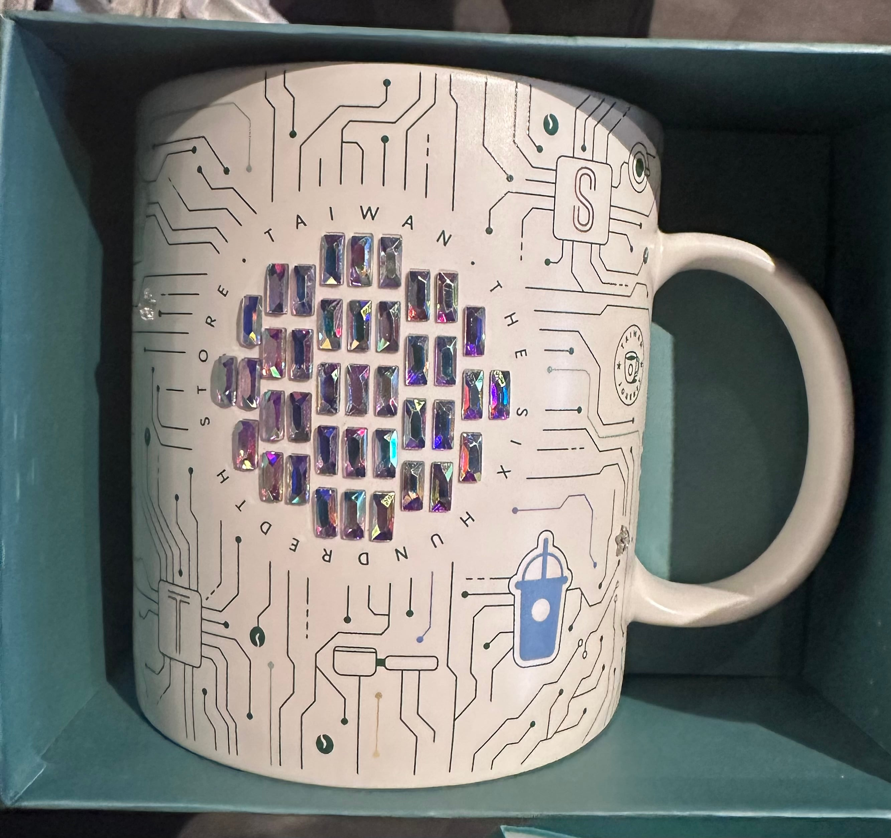

아마도 TSMC 콜라보인듯

아마도 TSMC 콜라보인듯
오 특이하네
세척 어떻게하냐
안쓸듯
스벅 모으는 사람들 대부분 장식으로 쓰더라
와 이쁘다
얘네도 한국처럼 직영매장 아니고 라이센스 따왔나보네
600호점 기념 컵이네. 한화로 약 7만원대
식기세척기 되면 살만할 듯
ㅈㄴ 예쁘다 생각했는데 가격보니 못사겠다
여기에 커피 마시면 클럭 올라갈 것 같이 생겼네 ㅋㅋ
이욜
헐 나도 갖고 싶다
씻다가 날라갈거 같은데
타이완 600 호점 기념 이라고 써져있잖아
와 이건 좀 갖고싶네요
취향 특이하네
스벅 머그컵 기념품으로 정말 좋은것 같아
역시 여행가면 그곳의 컵을 사오는게 최고의 기념품인듯 ㅋ
디카페인 담으면 절전모드 들어갈 것 같은 컵이네 ㅋㅋ
SFQR을 세로로도 측정하나
ㅈㄴ탐난다
이쁘다